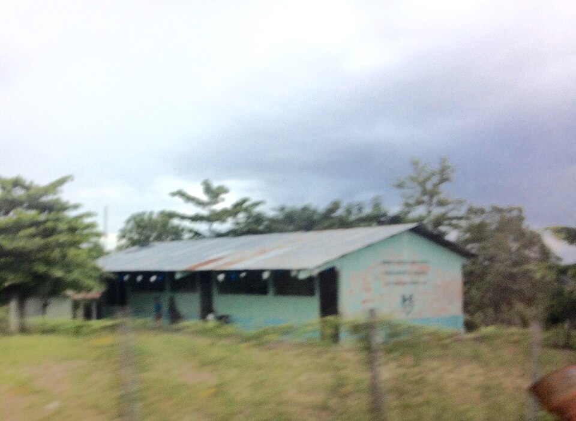
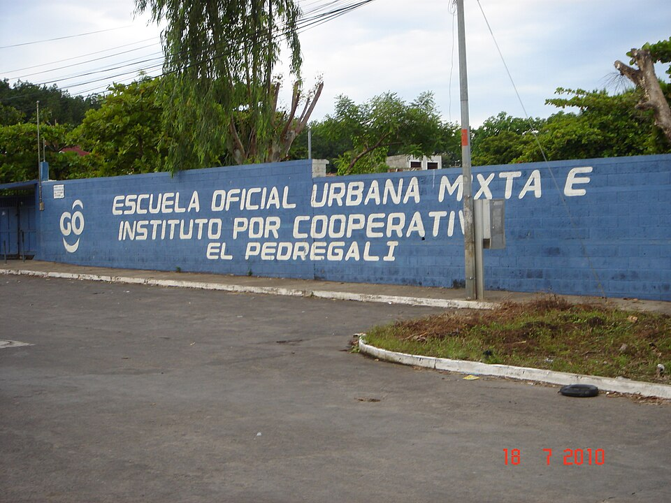

Telma volvió a estudiar
Dejó la escuela a los diez años para ayudar en casa cuando su madre enfermó. Después encontró un camino para continuar en un Centro Educativo Extraescolar. (UNICEF, 2022)
Leer su historia en UNICEF ↗CAPÍTULO 02 / EDUCACIÓN
¿Qué cambia cuando la escuela queda lejos, no hay computadora o estudiar exige dejar la casa?
Explorar los datos ↓Educación y oportunidades de conocimiento
La educación nos ayuda a entender lo que ocurre a nuestro alrededor, participar en nuestra comunidad y elegir qué queremos hacer. Pero ir a clases no garantiza que todas las personas tengan las mismas oportunidades.
Importan la distancia a la escuela, el dinero para transporte y materiales, el idioma en que se enseña y el tiempo disponible para estudiar. También importan la conexión a internet y un equipo que permita hacer tareas.
En Guatemala, estas condiciones cambian según el lugar donde se vive, el ingreso familiar, el género y el pueblo al que se pertenece. El Censo 2018 del Instituto Nacional de Estadística (INE) registró que el 85,0 % de los hombres y el 78,3 % de las mujeres de siete años o más sabían leer y escribir. Entre la población maya, los porcentajes fueron 77,95 % para hombres y 66,21 % para mujeres. Son datos de 2018, no cifras actuales: sirven para reconocer desigualdades y hacer mejores preguntas, sin atribuirlas a la identidad cultural de las personas. (INE, 2019) (INE, 2022)
La experiencia escolar tampoco termina al aprender a leer. Seguir estudiando puede ser difícil si alguien debe cuidar a familiares, trabajar o trasladarse lejos. Algunas personas encuentran alternativas en centros de educación flexible, becas o residencias estudiantiles. Sus historias muestran que el esfuerzo personal importa, pero también las condiciones que lo hacen posible. (UNICEF, 2022) (UNICEF, 2026)
La brecha digital es otra parte del problema. Una encuesta del INE encontró que en 2022–2023 el 31 % de los hogares urbanos tenía computadora, frente al 7,7 % de los rurales. Disponer de una computadora no significa que haya conexión estable, electricidad o un espacio tranquilo para estudiar; cada indicador cuenta una parte distinta de la historia. (INE, 2023b)
Por eso esta sección combina cifras, relatos y fotografías. Queremos comparar realidades sin reducir a nadie a un número. Una escuela que ofrezca materiales accesibles, enseñanza en idiomas que el alumnado comprenda y caminos para continuar después de una interrupción puede abrir más posibilidades. Al leer, vale la pena pensar en nuestra propia experiencia y en lo que cambiaríamos para que aprender dependa menos del lugar donde nacimos.
Compara los grupos dentro de cada gráfico. Cada barra indica su escala y cada número muestra el valor exacto.
Población de 7 años o más · escala de 0 a 100 %
Una diferencia de 11,74 puntos porcentuales. (INE, 2022)
Hogares urbanos y rurales · escala de 0 a 100 %
Tener computadora no garantiza conexión a internet. (INE, 2023b)
Estudiantes matriculados · escala de 0 a 10 %
Aquí la diferencia es de 2,3 puntos porcentuales. (INE, 2023a)
Cada gráfico compara grupos del mismo indicador. Entre gráficos cambian la población, la medida y el año; no conviene comparar directamente sus barras.
| Indicador | Mujeres | Hombres | Año |
|---|---|---|---|
| Alfabetismo, personas de 7 años o más | 78,3 % | 85,0 % | 2018 |
| Años promedio de estudio, personas de 7 años o más | 5,3 | 5,8 | 2018 |
| Deserción en primaria, estudiantes matriculados | 3,9 % | 4,5 % | 2019 |
| Deserción en básico, estudiantes matriculados | 5,7 % | 8,0 % | 2019 |
«Alfabetismo» significa saber leer y escribir. «Deserción» se refiere a dejar la escuela durante el ciclo escolar. (INE, 2019) (INE, 2023a) (INE, s. f.)
| Pueblo | Mujeres | Hombres |
|---|---|---|
| Maya | 66,21 % | 77,95 % |
| Garífuna | 82,92 % | 87,99 % |
| Xinka | 76,24 % | 82,14 % |
| Ladino | 86,92 % | 90,11 % |
Las categorías son las usadas por el INE en su tabulación del Censo 2018. (INE, 2022)
de los hogares en pobreza extrema tenían este servicio; entre hogares no pobres, 30,4 %. No mide uso de internet móvil. (INE, 2024)
Para estudiar en línea también cuentan el dispositivo, la electricidad y un lugar donde concentrarse.
Relatos publicados por UNICEF. No son entrevistas hechas por nuestro grupo.
Dejó la escuela a los diez años para ayudar en casa cuando su madre enfermó. Después encontró un camino para continuar en un Centro Educativo Extraescolar. (UNICEF, 2022)
Leer su historia en UNICEF ↗Para seguir estudiando, se trasladó de su comunidad rural a Huehuetenango. En 2026 cursaba Perito Contador con apoyo de una beca y residencia. (UNICEF, 2026)
Leer su historia en UNICEF ↗Su formación en INTECAP muestra que vivir cerca de la capital tampoco elimina todas las barreras para aprender y planear el futuro. (UNICEF, 2020)
Leer su historia en UNICEF ↗Estas imágenes muestran edificios, no la calidad de la enseñanza ni la experiencia de todo el alumnado.


Una reflexión desde nuestra mirada de estudiantes. Te invitamos a comparar estas ideas con tu experiencia.
Al pensar en mi educación, me doy cuenta de que una tarea no empieza igual para todas las personas. Si debo recorrer una larga distancia o compartir un teléfono para investigar, necesito más tiempo y recursos. Me parece injusto pedir el mismo resultado sin mirar esas condiciones. ¿Qué facilidades damos por sentadas en nuestra localidad?
No basta con que exista señal de internet: también hay que poder pagarla, tener un equipo útil y encontrar un lugar para estudiar. La brecha puede cruzarse con la pobreza, la distancia y la falta de materiales en el idioma que una persona comprende mejor. Un mismo pueblo reúne experiencias distintas; prefiero escuchar a cada comunidad antes de suponer qué necesita.
Imagino una escuela donde aprender en el idioma de la comunidad sea posible, haya libros y equipos compartidos, y quien trabaje o cuide a alguien pueda continuar sin quedar atrás. No resolvería todo de inmediato, pero abriría más caminos. ¿Qué tendría que cambiar primero en la escuela que tú conoces?
Las referencias conservan los años de cada publicación. Las fotografías tienen su licencia y crédito.